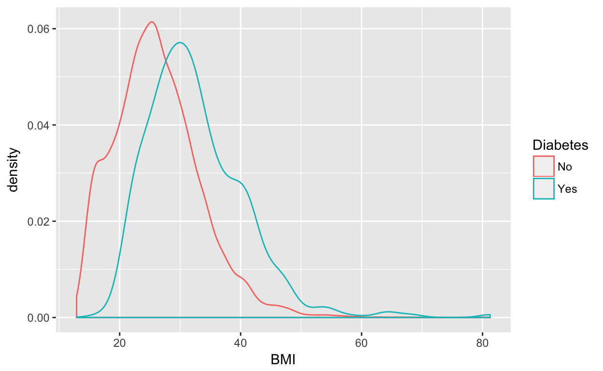
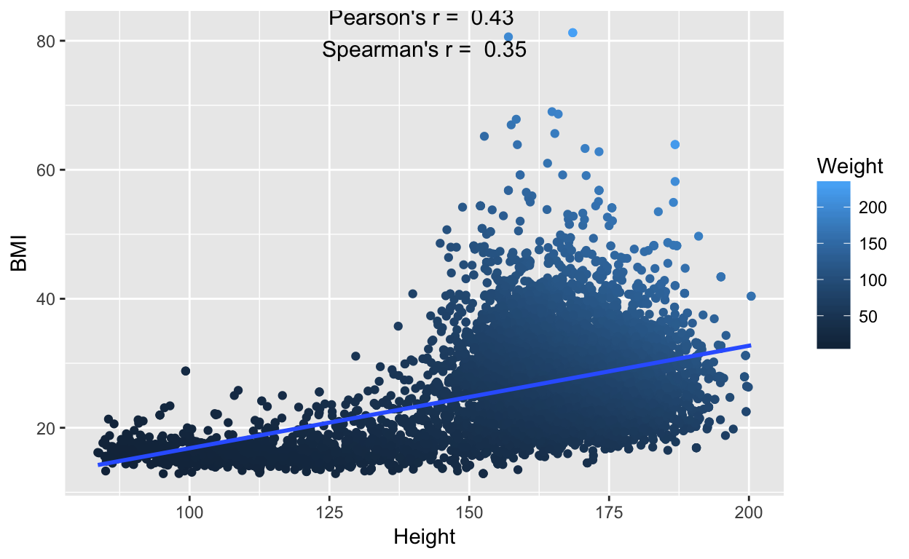
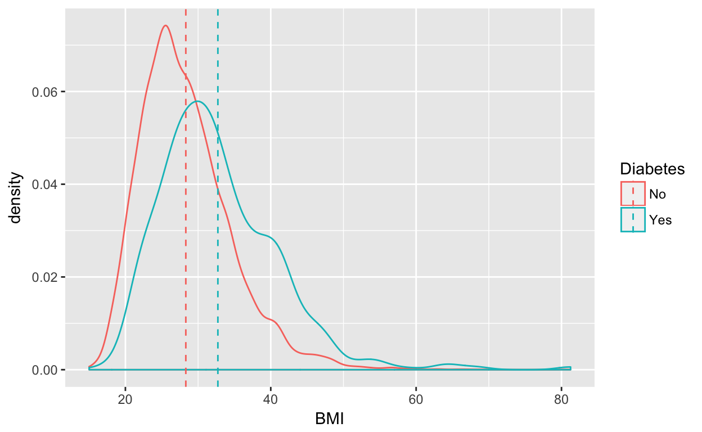
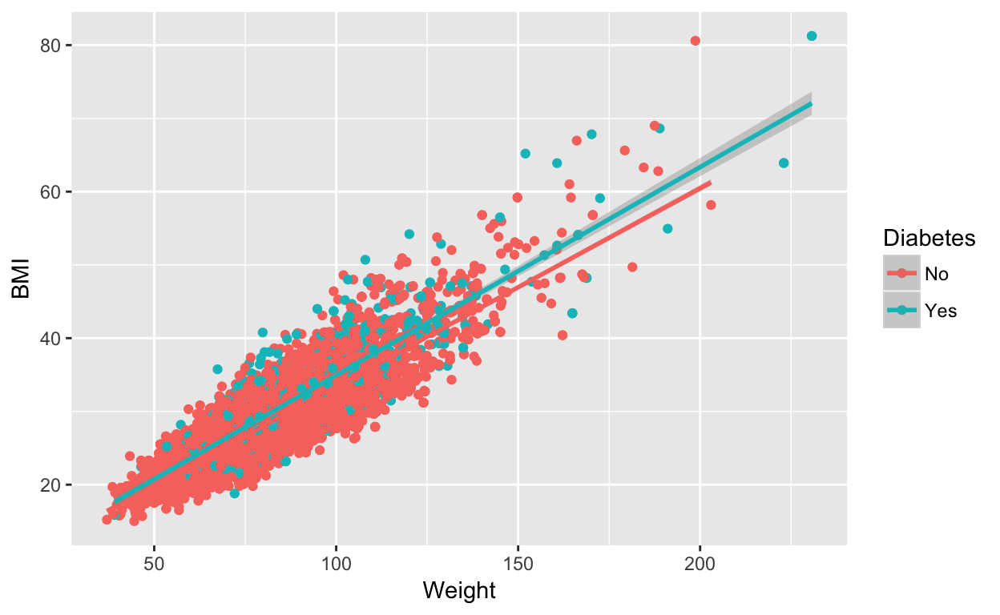

Learning Objectives for this Session
Don’t forget! Please fill out our pre-session survey. (pre-categorical and continuous)
Find this session at https://minnier.shinyapps.io/ODSI_continuousData/
At the end of this session you should be able to
- Understand statistical associations between continuous variables
- Understand statistical associations between a continuous and a binary variable
- Visualize ways to identify associations
- Basic understanding of correlation and t-tests
- If time allows, basic understanding of linear regression modeling
EDA with continuous variables
We saw bar plots and proportional plots used to visualize binary and categorical variables in the previous section. What are some good ways of visualizing continuous (quantitative) data? Let’s use the NHANES data set to visualize the variable BMI as a continuous variable.
(Note info about the NHANES data in the NHANES package can be found here with the disclaimer that NHANES are survey data so to do proper analyses we should use sampling weights. For illustration of more straightforward analyses we will ignore this detail.)
Histogram and density plots
A common visualization of the distribution of a continuous variable is a histogram (or the smoothed version—the density plot):
NHANES %>% ggplot(aes(x = BMI)) + geom_histogram(binwidth = 2.5) + geom_density(aes(y = 2.5 *
..count.., color = "red")) + ggtitle("Histogram and Density of NHANES BMI") +
guides(color = FALSE)
This plot shows us the frequency of certain values of BMI. We can see the distribution is somewhat “skewed” positively in that there are a few quite large values on the right tail of the distribution.
- This is something to think about, data is not always a perfect bell shaped (Normal distribution) curve!
Box plots
We can also use a box plot to see similar patterns. The help from the box plot R function ?geom_boxplot tells us what all the parts of the box plot mean:
“The lower and upper hinges correspond to the first and third quartiles (the 25th and 75th percentiles). This differs slightly from the method used by the boxplot function, and may be apparent with small samples. See boxplot.stats for for more information on how hinge positions are calculated for boxplot.
The upper whisker extends from the hinge to the largest value no further than 1.5 x IQR from the hinge (where IQR is the inter-quartile range, or distance between the first and third quartiles). The lower whisker extends from the hinge to the smallest value at most 1.5 x IQR of the hinge. Data beyond the end of the whiskers are called “outlying” points and are plotted individually."

All those dots piled up on the bottom are people who are outside the 1.5 x IQR, often though of as “outliers” of the population distribution. This also shows the positive skewness of the distribution.
How do we assess associations between two continuous variables?
We learned that good EDA can help us identify associations.
Scatter plots
The first visualization you are likely to make when you have two continuous variables is a scatter plot. Let’s look at the scatter plots of Height and Weight vs. BMI.
- How would you describe these relationships?


Correlation
A simple statistical quantification of the association of two continuous variables is the Pearson’s Correlation Coefficient (often labeled r).
Correlation = a quantity measuring the extent of interdependence of variable quantities
Pearson’s correlation coefficient: a measure of the linear correlation between two variables
- Note that this is quantifying a linear relationship.
- Value between -1 and +1, with 0 denoting no linear correlation
- We can visually represent the linear relationship with a line through the scatter plot.
- If the relationship is relatively curved or exponential Pearson’s correlation will not capture this relationship.
- An alternative might be the **Spearman’s correlation which essentially is the Pearson’s correlation of the ranks. This evaluates monotone relationships.
Question: How well does the line “fit” the data?

Correlation explorer
Now you can try to get a feel for what correlation (linear and non-linear) looks like. Try a few pairs:
(For fun sometime, play the “guess the correlation” game at guessthecorrelation.com)
What is a factor that may be associated with BMI?
Now let’s explore the association of BMI with a binary (yes/no) variable. How does BMI differ by Diabetes status?

We see that BMI is on average higher for subjects with diabetes than without. There is also a third category called NA. This means the data is missing.
Let’s explore the missingness in this data a bit before we move on.
Missingness and suspicious data elements
We can summarize the data with missing diabetes status:
NHANES %>% filter(is.na(Diabetes)) %>% select(Diabetes, BMI, Age) %>% summary## Diabetes BMI Age
## No : 0 Min. :22.20 Min. : 0.000
## Yes : 0 1st Qu.:22.20 1st Qu.: 0.000
## NA's:142 Median :22.20 Median : 0.000
## Mean :29.62 Mean : 1.197
## 3rd Qu.:40.76 3rd Qu.: 0.000
## Max. :40.76 Max. :67.000
## NA's :137Note that 137 out of 142 subjects with missing diabetes data also have missing BMI data. Also note the Age distribution. Does something look interesting?
What about missingness in BMI? How does this relate to age? We can use the naniar package in R to visualize this with a scatter plot:

We also might notice something interesting about the age distribution of our population.
For future analyses, let’s work with subjects older than 20 years of age, and remove subjects with missing Diabetes and BMI values. Lastly, let’s check out the box plots on this filtered data.
nhanes_filtered = NHANES %>% filter(Age >= 20, !is.na(Diabetes), !is.na(BMI))
nrow(nhanes_filtered)## [1] 7170
T Test
The most common statistical test to compare the distribution of continuous variables across a binary (Yes/No) variable (like diabetes) is the two sample Student’s T Test.
two sample T-statistic = (difference in means)/sqrt(pooled variance)
The test is is so named because the test statistic—which quantifies how different the means are in relation to the variance—follows a T-distribution. The T-distribution is like the normal bell shaped curve but with “fatter tails”. The tails become closer to the Normal distribution as n gets larger.

The T test makes assumptions about the distribution of your continuous variable within the two groups:
- The measure (BMI) follows a normal distribution with a certain mean and variance within each set (group).
- The two sets (groups) of data are independent. If we have some kind of relationship (i.e. matching, or measured on the same subjects) we need to use a “paired T test.”
Null vs alternative hypothesis
- Null hypothesis (Ho): two group means are equal
- Alternative hypothesis (Ha): the two group means are not equal
Let’s look at the smoothed histograms (density plots) of the two groups’ BMIs.

Question: Do we think the assumptions of the t-test hold?
However! The T-test is pretty robust to slight violations of the normality assumption, especially since we have a large sample size
- statistics side note: thanks to the Central Limit Theorem, our test is still valid as in we preserve our type I error; for a nice explanation of this see this Stats Geek blog post and Lumley T, et al 2002)
So, let’s run a t-test (yay!) to assess the difference in means of BMI comparing diabetics and non-diabetics:
| Difference in Means | Means No | Means Yes | T Statisitic | P Value |
|---|---|---|---|---|
| -6.4 | 26.16 | 32.56 | -20.83 | 3.9e-78 |
Note the p-value is extremely small. This is because we have a very large sample size and the difference in means is pretty large.
Smaller sample size
What happens if we have a much smaller sample size? We can examine the effect of sample size by randomly sampling a subset of the data. Look at our test statistic and p-value, as well as the difference in means.
Explore other factors
What other factors might be associated with BMI?
- To assess continuous factors we can make scatter plots
- We can stratify scatter plots by categorical variables
- –> assess associations of continuous variables with BMI within subcategories (i.e. of Diabetes)
- To remove the stratification option select
AllSubjectsas yourFactor - Question: Do any interesting associations arise?
Advanced Topic: Linear Models - multiple predictors/associations
Often we believe our measure or outcome of interest (i.e. BMI) is associated with several other variables at once. For instance, BMI could be associated with diabetes, blood pressure, physical activity, diet, among many other characteristics.
- A common framework for the analysis of these types of associations is linear regression.
- Linear regression attempts to associate a dependent variable or outcome (i.e. BMI) with one or more indepedent variables or predictors (i.e. diabetes, blood pressure).
Assumptions and model:
Mathematically, we are modeling our outcome \(\ Y\)
- as a linear combination of our other variables \(\ X_1, X_2, X_3 \ldots\)
- plus some random error \(\ \epsilon\) that is normally distributed
\[\ Y = \beta_0 + \beta_1 X_1 + \beta_2 X_2 + \epsilon\]
Suppose we want to determine if systolic blood pressure is associated with BMI after adjusting for diabetes status.
- That is, if we look at the subgroup of diabetics, is pulse associated with BMI?
- Similarly, if we look at the subgroup of non-diabetics, is blood pressure associated with BMI?
We would fit a model:
\[\ BMI = \beta_0 + \beta_1 (Pulse) + \beta_2 (Diabetes = Yes) + \epsilon\] and test whether the coefficient \(\ \beta_1\) is equal to 0 or not.
We can visualize this:

We can run a linear regression in R and view the output:
summary(fit1 <- lm(BMI ~ Pulse + Diabetes, data = nhanes_filtered))##
## Call:
## lm(formula = BMI ~ Pulse + Diabetes, data = nhanes_filtered)
##
## Residuals:
## Min 1Q Median 3Q Max
## -15.858 -4.506 -0.955 3.511 49.037
##
## Coefficients:
## Estimate Std. Error t value Pr(>|t|)
## (Intercept) 23.798469 0.483366 49.235 <2e-16 ***
## Pulse 0.062616 0.006579 9.518 <2e-16 ***
## DiabetesYes 4.413150 0.256685 17.193 <2e-16 ***
## ---
## Signif. codes: 0 '***' 0.001 '**' 0.01 '*' 0.05 '.' 0.1 ' ' 1
##
## Residual standard error: 6.515 on 6924 degrees of freedom
## (243 observations deleted due to missingness)
## Multiple R-squared: 0.05366, Adjusted R-squared: 0.05339
## F-statistic: 196.3 on 2 and 6924 DF, p-value: < 2.2e-16- We interpret the coefficient of
Pulseas: for every one unit (beat per minute) increase in pulse, we expect the average BMI to increase by 0.063 kg/m^2. - Question: is this a very strong association?
- R-squared is a measure of how well the predictors explain the variation in the outcome, on a scale from 0 to 1. Do you think these predictors as explaining BMI very well? That is, if we are given a subjects pulse and diabetes status, how sure are we that the predicted BMI from this model is correct?
This idea of “how well can we predict our outcome” drives much of statistical modeling, including machine learning and predictive analytics.
We can include many predictors in our model and still not have a very good R-squared, as BMI is a very complex trait:
summary(fit1 <- lm(BMI ~ PhysActive + SmokeNow + Gender + Race3 + BPSysAve +
BPDiaAve + Pulse + Diabetes, data = nhanes_filtered))##
## Call:
## lm(formula = BMI ~ PhysActive + SmokeNow + Gender + Race3 + BPSysAve +
## BPDiaAve + Pulse + Diabetes, data = nhanes_filtered)
##
## Residuals:
## Min 1Q Median 3Q Max
## -14.8642 -3.9856 -0.6692 3.4475 25.7676
##
## Coefficients:
## Estimate Std. Error t value Pr(>|t|)
## (Intercept) 20.833687 1.690376 12.325 < 2e-16 ***
## PhysActiveYes -1.855149 0.310287 -5.979 2.81e-09 ***
## SmokeNowYes -2.086463 0.313727 -6.651 4.08e-11 ***
## Gendermale 0.298071 0.310560 0.960 0.337318
## Race3Black 4.267175 0.973970 4.381 1.26e-05 ***
## Race3Hispanic 3.637201 1.067744 3.406 0.000676 ***
## Race3Mexican 5.386728 1.014528 5.310 1.26e-07 ***
## Race3White 2.979566 0.843526 3.532 0.000425 ***
## Race3Other 4.384487 1.210714 3.621 0.000303 ***
## BPSysAve -0.008260 0.009193 -0.899 0.369059
## BPDiaAve 0.045805 0.012815 3.574 0.000362 ***
## Pulse 0.045541 0.012659 3.598 0.000332 ***
## DiabetesYes 3.429790 0.486321 7.053 2.68e-12 ***
## ---
## Signif. codes: 0 '***' 0.001 '**' 0.01 '*' 0.05 '.' 0.1 ' ' 1
##
## Residual standard error: 5.745 on 1495 degrees of freedom
## (5662 observations deleted due to missingness)
## Multiple R-squared: 0.1242, Adjusted R-squared: 0.1171
## F-statistic: 17.66 on 12 and 1495 DF, p-value: < 2.2e-16What if we tried to predict BMI with weight?
summary(fit1 <- lm(BMI ~ Weight + Diabetes, data = nhanes_filtered))##
## Call:
## lm(formula = BMI ~ Weight + Diabetes, data = nhanes_filtered)
##
## Residuals:
## Min 1Q Median 3Q Max
## -10.0042 -2.1506 -0.2492 1.7791 20.2541
##
## Coefficients:
## Estimate Std. Error t value Pr(>|t|)
## (Intercept) 6.22507 0.14876 41.85 <2e-16 ***
## Weight 0.27237 0.00177 153.92 <2e-16 ***
## DiabetesYes 1.39262 0.12404 11.23 <2e-16 ***
## ---
## Signif. codes: 0 '***' 0.001 '**' 0.01 '*' 0.05 '.' 0.1 ' ' 1
##
## Residual standard error: 3.14 on 7167 degrees of freedom
## Multiple R-squared: 0.7771, Adjusted R-squared: 0.777
## F-statistic: 1.249e+04 on 2 and 7167 DF, p-value: < 2.2e-16- What is the R-squared, now? Why?
- Does this model make sense in practice?

Your Turn
Modify the R code in the lm() function to build your own linear regression model. Here are the names of the NHANES data set:
## [1] "ID" "SurveyYr" "Gender"
## [4] "Age" "AgeDecade" "AgeMonths"
## [7] "Race1" "Race3" "Education"
## [10] "MaritalStatus" "HHIncome" "HHIncomeMid"
## [13] "Poverty" "HomeRooms" "HomeOwn"
## [16] "Work" "Weight" "Length"
## [19] "HeadCirc" "Height" "BMI"
## [22] "BMICatUnder20yrs" "BMI_WHO" "Pulse"
## [25] "BPSysAve" "BPDiaAve" "BPSys1"
## [28] "BPDia1" "BPSys2" "BPDia2"
## [31] "BPSys3" "BPDia3" "Testosterone"
## [34] "DirectChol" "TotChol" "UrineVol1"
## [37] "UrineFlow1" "UrineVol2" "UrineFlow2"
## [40] "Diabetes" "DiabetesAge" "HealthGen"
## [43] "DaysPhysHlthBad" "DaysMentHlthBad" "LittleInterest"
## [46] "Depressed" "nPregnancies" "nBabies"
## [49] "Age1stBaby" "SleepHrsNight" "SleepTrouble"
## [52] "PhysActive" "PhysActiveDays" "TVHrsDay"
## [55] "CompHrsDay" "TVHrsDayChild" "CompHrsDayChild"
## [58] "Alcohol12PlusYr" "AlcoholDay" "AlcoholYear"
## [61] "SmokeNow" "Smoke100" "Smoke100n"
## [64] "SmokeAge" "Marijuana" "AgeFirstMarij"
## [67] "RegularMarij" "AgeRegMarij" "HardDrugs"
## [70] "SexEver" "SexAge" "SexNumPartnLife"
## [73] "SexNumPartYear" "SameSex" "SexOrientation"
## [76] "PregnantNow"nhanes_filtered = NHANES %>% filter(Age >= 20, !is.na(Diabetes), !is.na(BMI))
# edit the code in the formula by adding in variable names
summary(fit <- lm(BMI ~ Pulse + Diabetes, data = nhanes_filtered))nhanes_filtered = NHANES %>% filter(Age >= 20, !is.na(Diabetes), !is.na(BMI))
# edit the ggplot code after x= and y= and color= to change the axes and the
# color
nhanes_filtered %>% ggplot(aes(x = Pulse, y = BMI, color = Diabetes)) + geom_point() +
geom_smooth(method = "lm")Resources and extra practice
To learn more R coding and a bit more about EDA and statistical analysis, try out our Data Camp course: